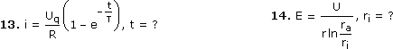
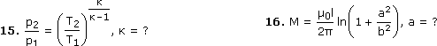
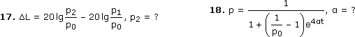

Exp-Log-Gleichungen - Aufgaben 1
Bestimme die Lösungsmenge in
 :
:1. 3x+252x–1 = 6x–1
2. 5·23x–1 – 2·4x+1 = 4x–1 – 3·23x
3. e2x – 3ex = 10
4. 9x – 24·3x–1 + 15 = 0
5. loga(4x + 1) + loga(x – 2) = loga(x + 3)
6. 10ln(2x + 1) = 9 – 5ln(4x2 – 4x + 1)
7. (xlgx)2 =
x5
100
8.
5ex
3ex + 1
1
e–x – 1
9. 24x + 8·32x + 7·24x–1 = 32(x+1)
10. 10–x + 4·10x = 5
11. 2lg(x + 6) = 1 + lg(2x + 5)
12.
1
lnx
1
x
1
3
Löse nach der angegebenen Variablen auf:



Ergebnisse:
1. { –0,942 } 2. { 0,585 } 3. { 1,609 } 4. { 1; 1,465 } 5. { 2,5 } 6. { 0,930 }
7. { 3,162; 100 } 8. { –0,693 } 9. { –2,614 } 10. { –0,602; 0 }
11. { –1,477; 9,477 } 12. { 0,307; 2,333 } 13. –τln(1–iR/Uq) 14. rae–U/Er
15.
ln(p2/p1)
ln(p2/p1) – ln(T2/T1)
1
4t
p0(p – 1)
p(p0 – 1)